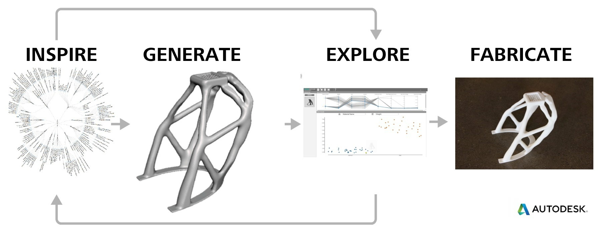

¿Qué es y para qué sirve simular?
1. ¿Qué es y para qué sirve simular?¶
Definición: Simular:
Del latín simulâre: “copiar, representar” o simulatio “acción y efecto de imitar algo”
Reproducir artificialmente un fenómeno o las relaciones entrada-salida de un sistema
Una simulación digital es la aplicación de un modelo computacional para la predicción de eventos físicos o el comportamiento de sistemas de ingeniería.
Hoy en día las simulaciones son un pilar fundamental en ciencia, como muestra la siguiente figura sobre la evolución de los paradigmas científicos.

Consejo
La simulación nos permite explorar nuevas teorías o diseñar nuevos experimentos para probar dichas teorías.
Usando simulaciones podemos estudiar fenómenos que son costosos, peligrosos, imprácticos de observar y/o medir.
En particular usando simulaciones podemos:
analizar un sistema antes de haberlo construido
analizar situaciones a las que el sistema aun no ha sido expuesto
realizar predicciones sobre el comportamiento futuro del sistema
Con el rápido avance y la disminución en costos de la computación, la simulación digital se ha vuelto una herramienta clave en muchas disciplinas, e.g. eléctrica, mecánica, química, aeroespacial, nuclear, biomédica, materiales. Los simuladores son también ampliamente usados en educación.

{kind=link}